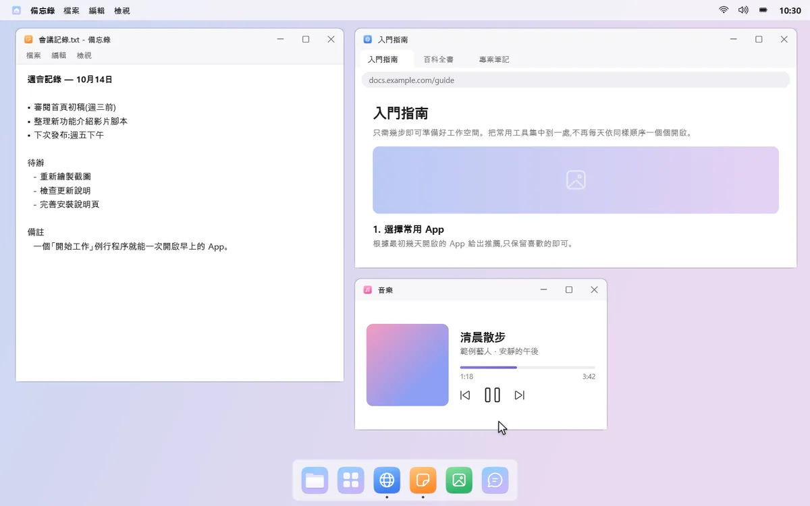
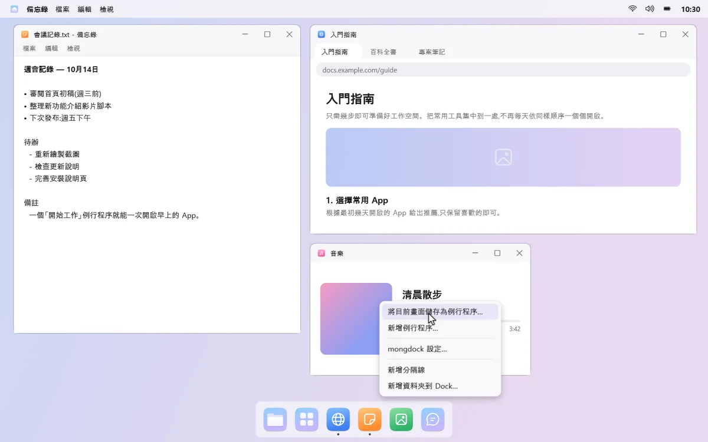
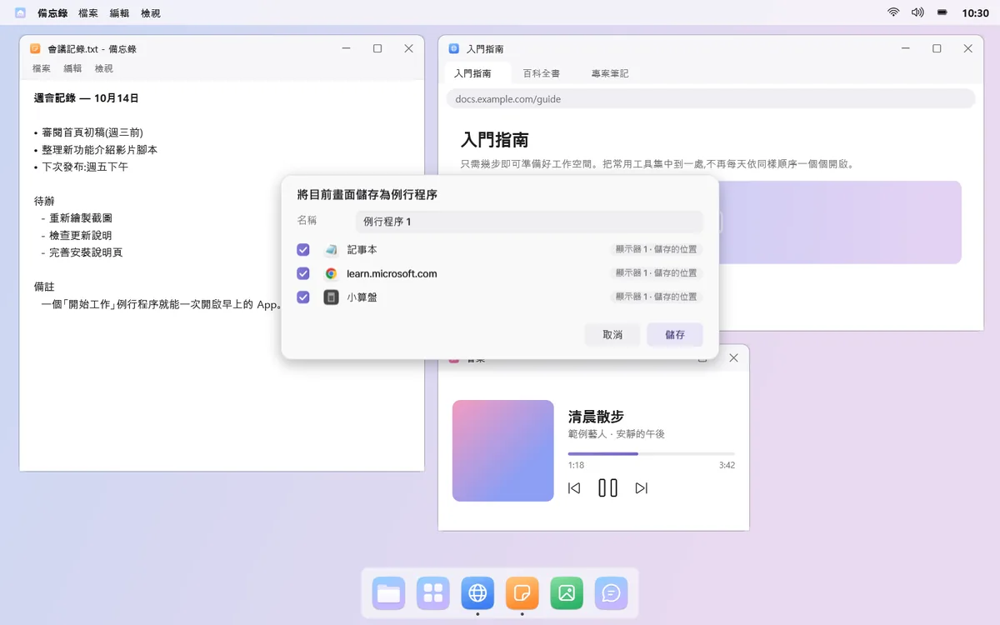
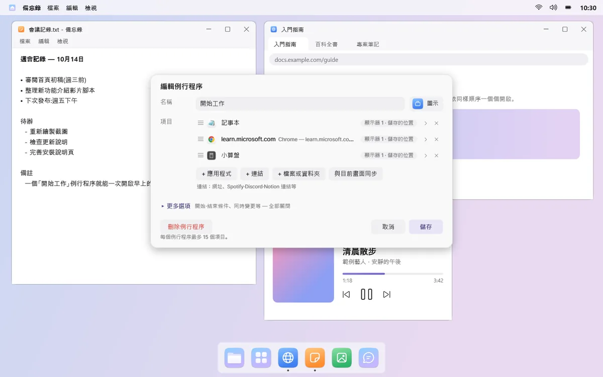
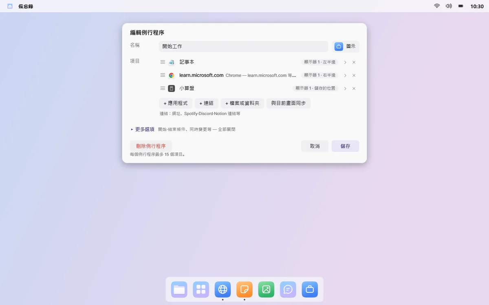
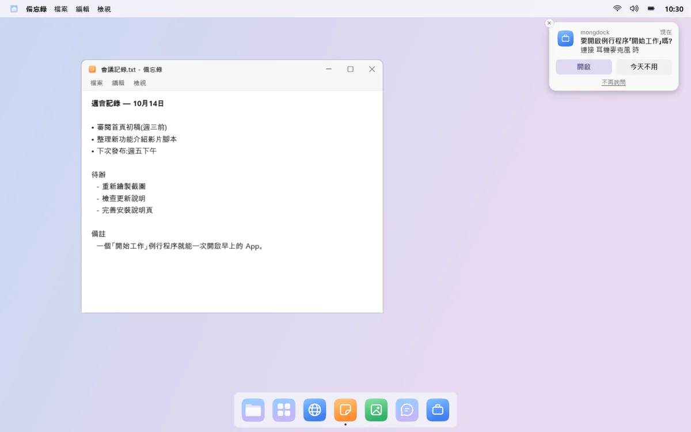

例行程序
每天用的 App，一次打開
把一起用的 App、連結和遊戲歸到一個例行程序裡。按一下，它們會在新桌面上各就各位地開啟；結束時，只關閉這些視窗。
例如按一下「開始工作」，郵件、瀏覽器和文件就會在你選好的顯示器和位置上開啟。
01
開啟時，位置也排好
按一下例行程序，會新增一個虛擬桌面，每個 App 都在你選好的顯示器和位置上開啟，不論是全螢幕還是左半邊。選單列會顯示例行程序名稱，也可以顯示你在那裡待了多久。


02
把現在的畫面存起來
把視窗擺成你喜歡的樣子，再選擇「將目前畫面儲存為例行程序…」，就完成了。mongdock 也會發現你常一起開的 App，並推薦例行程序。




03
App、連結、遊戲都可以
一個例行程序裡可以混合放入 App、能開啟多個分頁的連結，以及檔案或資料夾。Steam、Epic、GOG 的遊戲和啟動器也能放進去，例行程序一開啟就會啟動。

04
時候到了，先問一聲
接上耳機或顯示器、打開電腦、到了設定的星期和時間，或啟動某個 App 時，mongdock 會問「要開啟嗎？」。同一條件每天最多問一次。預設只在你按下時開啟。

05
結束時也乾淨
「結束例行程序」只會關閉例行程序開啟的視窗，其他視窗一概不動。如果例行程序切換了聲音輸出、音量、勿擾或 Dock 自動隱藏，結束時會恢復原狀。
開始與結束條件等選項都在編輯視窗的「更多選項」裡，預設全部關閉。
須知
- 只執行一個視窗的 App（例如 Discord）如果已經在執行，就不會再開啟，mongdock 會告訴你它在哪個桌面。
- 結束例行程序時，正在詢問是否儲存的視窗會保留不關。
- 開啟例行程序後如果重新啟動 mongdock，就無法得知哪些視窗是例行程序開的，需要你自己關閉。